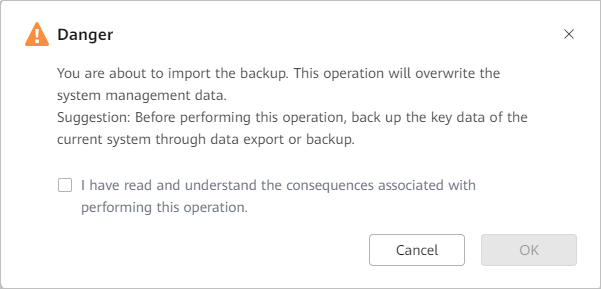
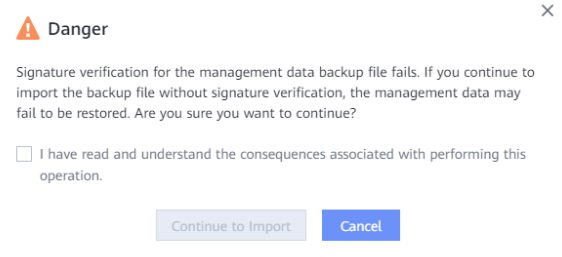

This section describes how to import an original management data backup stored in a local directory into the system for overwriting system management data.
Set the parameters for importing a backup. Table 1 describes the related parameters.
Parameter |
Description |
|---|---|
File |
Select a file. NOTE:
Only .zip files can be imported, and the file size cannot exceed 4 GB. |
Data Encryption Password |
Enter the data encryption password set in the backup policy. |
Signature Verification |
This function is enabled by default.
|
Password of User admin |
Enter the password of user admin for logging in to DeviceManager. |

After OceanProtect reinstallation, the original management data backup file can be imported.
Set the parameters for importing a backup. Table 2 describes the related parameters.
Parameter |
Description |
|---|---|
File |
Select a file. NOTE:
Only .zip files can be imported, and the file size cannot exceed 4 GB. |
Data Encryption Password |
Enter the data encryption password set in the backup policy. |
Signature Verification |
This function is enabled by default.
|
Password of User admin |
Enter the password of user admin for logging in to DeviceManager. |
